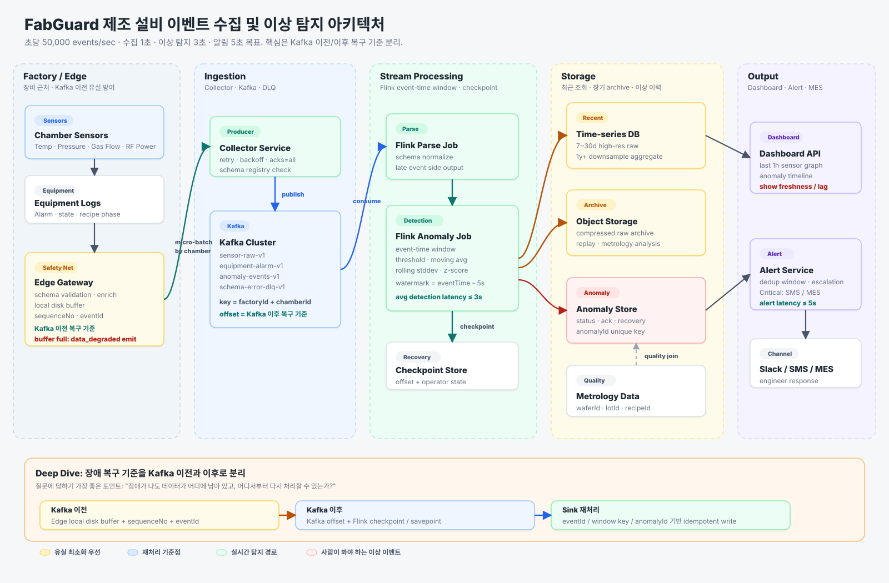

Edge local buffer가 마지막 방어선
Kafka에 들어오기 전 유실은 offset으로 복구할 수 없다.
그래서 Edge Gateway가 local disk buffer, sequenceNo, eventId를 가진다.
반도체 Fab의 Chamber 센서 데이터와 장비 로그를 Edge Gateway에서 수집하고 Kafka, Flink, 시계열 저장소, 알림 시스템으로 연결한다. 핵심 질문은 장애가 났을 때 데이터가 어디에 남아 있고, 어디서부터 다시 처리할 수 있는가이다.
Factory/Edge, Ingestion, Stream Processing, Storage, Output을 분리하고 Kafka 이전/이후의 복구 기준을 명확히 표시했다.

week5 선택 질문은 장애 복구 및 재처리 구조다. 아래 세 가지 기준을 말하면 아키텍처의 의도가 선명해진다.
Kafka에 들어오기 전 유실은 offset으로 복구할 수 없다.
그래서 Edge Gateway가 local disk buffer, sequenceNo, eventId를 가진다.
Kafka 이후는 topic offset과 Flink checkpoint/savepoint로 다시 처리한다. 장애 후 마지막 성공 checkpoint부터 state와 offset을 함께 복구한다.
at-least-once 처리는 같은 이벤트를 두 번 쓸 수 있다.
저장소는 eventId, window key, anomalyId로 중복을 제거한다.
어떤 장애가 났을 때 데이터가 남아 있는 위치와 재처리 기준을 분리해 둔다.
| 장애 지점 | 데이터가 남는 곳 | 복구 방식 | 중복 처리 |
|---|---|---|---|
| Edge → Collector 단절 | Edge local disk buffer | 연결 복구 후 sequence 순서대로 재전송 | eventId dedup |
| Collector 장애 | Edge buffer / retry queue | 다른 Collector로 failover | Kafka key + eventId |
| Flink Job 장애 | Kafka topic + Flink checkpoint | 마지막 checkpoint부터 state와 offset 복구 | sink idempotency |
| TSDB sink 장애 | Kafka/Flink checkpoint | sink 복구 후 checkpoint 이전부터 재처리 | eventId 또는 window key upsert |
| Schema 오류 | DLQ topic | schema/mapping 수정 후 replay | 원본 eventId 유지 |